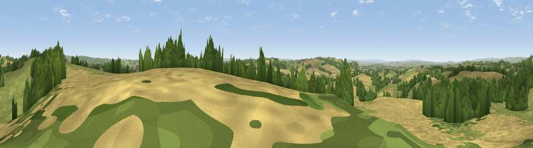

Viewpoint near Holton
#8554 in England · top 11% of its area beats it · near HoltonWhere it is
The exact computed spot (ST 67325 27825). Click the marker for map links.
The view, rendered

A 360° render of this exact spot computed from the terrain model, tree cover and land cover — summer colours, afternoon light, calibrated against photographs of famous viewpoints. Real trees, hedges and buildings will differ in detail.
The panorama
Grey silhouette: terrain skyline in each direction (720 bearings, Earth curvature and refraction included). Dashed green: skyline with trees (+15 m) and buildings (+8 m) as obstacles. Blue strip: how far the ground is visible on each bearing.
Where the view opens
Wedge length = distance to the farthest visible ground on that bearing (vegetation-aware). Rings at 10, 25 and 50 km.
What fills the view
39% grassland · 38% cropland · 22% woodland
Angular shares of the visible panorama (visual magnitude), not map area. Landscape diversity 0.48 (0–1 Shannon).
Key numbers
More beautiful places nearby
The staircase of upgrades: each row has a higher view potential than everything closer. Driving times are estimates from straight-line distance, calibrated against real road routing — check an actual route before setting out.
| Place | Direction | Drive | Score |
|---|---|---|---|
| Bratton Hill | N · 2 km | ~5 min | 68.0 |
| Viewpoint near South Cadbury | SW · 4 km | ~10 min | 74.8 |
| Parrock Hill | SW · 6 km | ~13 min | 75.5 |
| The Beacon | SW · 6 km | ~13 min | 75.8 |
| Viewpoint near Lamyatt | N · 8 km | ~16 min | 77.8 |
| Viewpoint near Berwick St John | ESE · 26 km | ~42 min | 78.2 |
| Viewpoint near Hewish | SW · 32 km | ~50 min | 78.5 |
| Beacon Batch | NNW · 35 km | ~53 min | 79.4 |
51.04884, -2.46751 · source: screening · position refined by local search. Computed location — check access rights before visiting.